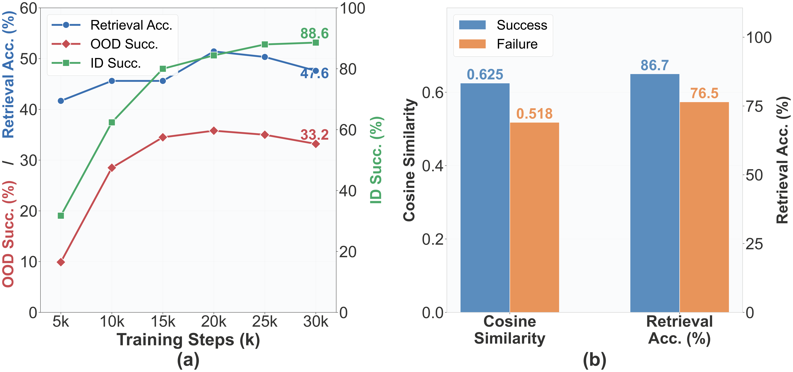
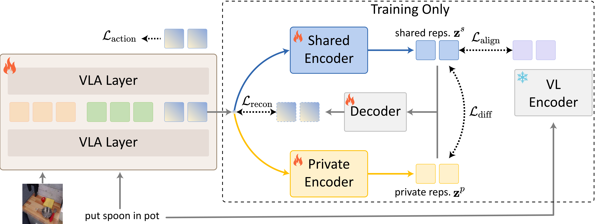

Abstract
Vision-Language-Action (VLA) models inherit rich semantic representations from pretrained Vision-Language Models, yet fine-tuning on limited robot demonstrations degrades this structure and undermines generalization. Inspired by the mirror neuron theory's insight that observation and execution share an intention-level encoding, we examine whether a robot's action representations preserve the semantic structure captured by pretrained encoders. Systematic probing confirms that this structure erodes during fine-tuning, and that its quality synchronizes with both task success and out-of-distribution generalization.
We introduce a plug-and-play method that anchors action representations to a semantic manifold while decomposing them into a shared semantic channel and a private execution channel—all discarded at inference, leaving the deployed model unchanged. Validated on different VLA backbones across simulation and real-world benchmarks, our method yields up to +18.7% on real-world in-distribution tasks and +21.5% on OOD generalization.
Demo Video
Diagnostic
We probe action–instruction alignment across the full π₀ fine-tuning trajectory on LIBERO. OOD success synchronizes with alignment quality, while in-distribution success can still rise as alignment drops—revealing shortcut learning on near-distribution data.

(a) Alignment, ID, and OOD success over training. (b) Per-trajectory metrics at step 30k (success vs. failure rollouts).
Method
A pretrained VLA maps visual observations and language instructions to actions. At mid-layer k (we use k=10), action-token features are decomposed into a shared channel (intention-level semantics) and a private channel (execution-specific detail). Shared features are attention-pooled and contrastively aligned to instruction embeddings from a frozen EgoHOD text encoder. The total loss combines action prediction with alignment, reconstruction, and decorrelation terms; all auxiliary modules are removed at inference.

Method overview: semantic anchoring with shared/private decomposition (training-time only).
In-Distribution Evaluation
Fruit Pick & Place
"put the grapes on the plate"
Fruit Pick & Place
"put the banana on the plate"
Dish Stacking
"stack the cups"
Dish Stacking
"stack the plates"
Box Packing
"put the toy in the box..."
Box Packing
"put the grapes in the box..."
Cabinet Storage
"put the sponge in..."
Cabinet Storage
"put the cup in..."
OOD Generalization
Building on the pick-and-place family, we evaluate five out-of-distribution axes: Spatial Variation, Novel Object, Visual Distraction, Language Variation, and Compositional Task.
1. Spatial Variation
2. Novel Object
3. Visual Distraction
4. Language Variation
5. Compositional Task
Baseline vs. Ours
More Accurate Execution
Ours (Success)
π₀ Baseline (Failure)
Better Intention Understanding
Ours (Success)
π₀ Baseline (Failure)
BibTeX